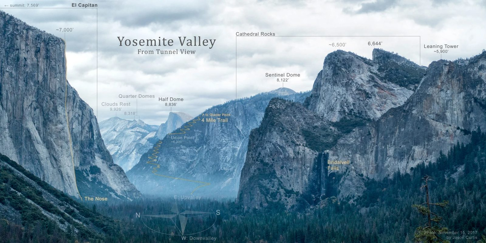

Yosemite National Park · California
Monday August 3 – Thursday August 6, 2026

Before you leave the car park
Schedule
All 17 stops for the trip, day by day. Cell service in Yosemite Valley is poor, so screenshot this before you go.
Cell service in Yosemite Valley is poor to nonexistent. Your calendar app will show these events offline once synced, but screenshot this table too.
| When | What | Notes |
|---|---|---|
| Monday, August 3 · Drive in | ||
| 5:30 AM | Depart Lake Arrowhead | Early start to clear the Central Valley before 105–113°F |
| 10:30 AM | Fresno: lunch + groceries | Last real supermarket. Cold food only, no cooking at Curry. |
| 12:30 PM | Oakhurst: final gas | No gas station exists in Yosemite Valley |
| 1:15 PM | South Entrance | 30–90 min line. $35, card only. |
| 2:45 PM | Tunnel View | First look at the Valley |
| 4:00 PM | Check in, Curry Village Apple Maps Google | Not a minute earlier. Long line. Bear locker immediately. |
| 6:00 PM | Dinner + Stoneman Meadow | Alpenglow on Half Dome, sunset ~8:10 PM |
| Tuesday, August 4 · Glacier Point Road | ||
| 7:30 AM | Leave for Glacier Point | 60 mi round trip. Lot fills mid-morning. |
| 8:30 AM | Glacier Point | 7,214 ft. No drinking water, bring your own. |
| 11:00 AM | Sentinel Dome | 2.2 mi RT, ~400 ft, 360° summit at 8,127 ft |
| 1:30 PM | Taft Point & the Fissures | 2.2 mi RT. No railings. Keep well back. |
| 4:00 PM | Drive down, El Cap Meadow | Watch climbers on the wall |
| Wednesday, August 5 · Vernal Fall | ||
| 5:45 AM | Vernal Fall via John Muir Trail | 5.4 mi RT, ~1,300 ft. Mist Trail is closed until 3:30 PM. 2L water each. |
| 12:30 PM | Merced River / Curry pool | Do not be in the tent between 1 and 6 PM |
| 5:30 PM | Bridalveil Fall + Cook's Meadow | Golden hour, both paved and easy |
| Thursday, August 6 · Home | ||
| 6:15 AM | Mirror Lake at sunrise | 2 mi RT paved and shaded |
| 11:00 AM | Check out | Hard deadline. Late = charged a full extra night. Empty the bear locker. |
| 12:15 PM | Wawona Swinging Bridge | Swimming hole and lunch, on the route out |
| 1:30 PM | Mariposa Grove | Grizzly Giant Loop, 2 mi. Free shuttle from the Welcome Plaza. |
| 3:45 PM | Drive home | Gas in Oakhurst first. Home ~10:15 PM. |
Reference
Trails
Best option in this heat. All at 7,000 to 7,700 ft, which runs 10 to 15 degrees cooler than the Valley. Two trailheads, one afternoon.
| Hike | Distance | Gain | Time |
|---|---|---|---|
| Glacier Point overlook | 0.6 mi RT, paved | minimal | 30 min |
| Sentinel Dome | 2.2 mi RT | ~400 ft | 1.5 hrs |
| Taft Point & the Fissures | 2.2 mi RT | ~250 ft | 1.5 hrs |
| Hike | Distance | Notes |
|---|---|---|
| Bridalveil Fall | 0.5 mi RT, paved | Still has flow in August |
| Mirror Lake | 2 mi RT, paved | Shaded along Tenaya Creek. Best straight-up Half Dome view in the park. |
| Cook's Meadow Loop | 1 mi, flat boardwalk | Do it at golden hour |
Chain them with a swim at Swinging Bridge or Sentinel Beach.
Skip Lower Yosemite Fall. It is the most popular easy walk in the park, but Yosemite Falls is typically a trickle or bone dry by early August.
Mariposa Grove Road is closed to private vehicles. Park at the Welcome Plaza and ride the free shuttle, roughly 8 AM to 7 PM. Confirm hours on arrival.
| Trail | Distance | Gain | Time |
|---|---|---|---|
| Big Trees Loop | 0.3 mi | flat, accessible | 20 min |
| Grizzly Giant Loop | 2 mi | ~300 ft | 1.5 hrs |
| Guardians Loop | 6.5 mi | ~1,200 ft | 4–5 hrs |
Grizzly Giant Loop is the pick: the Grizzly Giant, the Bachelor and Three Graces, and the California Tunnel Tree. Shaded, at 5,600 ft, and your only giant sequoias this trip.
Trail maps
Every hike on this trip, one tap away. Download each map in the AllTrails app while you still have wifi — they will not load in the Valley, where there is no signal.
Not on the fixed schedule, but all short, fun, and easy to slot into a free hour. The first three are flat and paved; the last three earn you a view for a bit of a climb.
The Vernal Fall link covers the trailhead and first section. Past the footbridge, follow the John Muir Trail signs to the Clark Point cutoff — the Mist Trail is closed Monday to Thursday, 7 AM to 3:30 PM. Inspiration Point and Columbia Rock are the two with real climbing; save them for a cooler morning, not the afternoon heat.
Gear
Specific to an unheated canvas tent cabin. Tick as you go.
Bear rules are not optional. No food, drinks, toiletries, or trash in the tent or the car. Everything goes in the bear locker. Fines run up to $5,000 and vehicles used for food storage can be impounded. Cooking is prohibited anywhere in Curry Village.
Forecast
Estimated conditions on the Valley floor at 4,000 ft.
| Day | Est. high | Est. low | Notes |
|---|---|---|---|
| Mon Aug 3 · arrival | 97–102°F | ~62°F | Peak heat. Your drive crosses the Central Valley at 105–113°F. |
| Tue Aug 4 | 95–100°F | ~60°F | Last day of the ridge |
| Wed Aug 5 | 91–96°F | ~58°F | Cooling begins |
| Thu Aug 6 · depart | 89–94°F | ~57°F | Near normal for August |
Confidence is low. These are estimates built from the NWS heat outlook plus August climatology, where the normal Valley high is around 89°F. The position of the high-pressure system is still uncertain. Re-check the forecast the night before departure.
Do this first
Any one of these can derail the trip. Sort them before you pack.
August is peak season. Call (888) 413-8869 and confirm you have a confirmation number, not a browsing session. Backups: Housekeeping Camp, Yosemite Valley Lodge, or outside the park in El Portal, Midpines, Mariposa, or Oakhurst.
Tent cabins come as 1 double, or 1 double + 1 single, or 1 double + 3 singles. Roll-away beds and cribs are not available. Three people in a two-bed unit means someone shares a double. Make sure the third person is on the reservation.
Trail repairs run July 27 through October. The section above the Vernal Fall footbridge is closed Monday through Thursday, 7:00 AM to 3:30 PM. There is a workaround, see below.
Deposit is 100% of the first night at booking, and cancellations need 7 or more days notice. At this point, treat the booking as non-refundable.
Money
Taxes total 13.7% (12% occupancy, 1.5% TBID, 0.2% CA tourism). Third person is $17.50 per night plus tax, ages 13 and up.
| Low | Likely | High | |
|---|---|---|---|
| Nightly rate | $160 | $190 | $215 |
| 3 nights | $480 | $570 | $645 |
| 3rd person | $53 | $53 | $53 |
| Taxes | $73 | $85 | $96 |
| Total | $606 | $708 | $794 |
| Per person | $202 | $236 | $265 |
About 350 miles each way plus 60 to 100 miles of in-park driving. Budget 780 miles. California is running around $5.50 a gallon.
| Vehicle | Gallons | Cost | Per person |
|---|---|---|---|
| 20 mpg | 39 | $215 | $72 |
| 25 mpg | 31 | $172 | $57 |
| 30 mpg | 26 | $143 | $48 |
There is no gas station in Yosemite Valley. Last affordable fuel is Oakhurst. In-park gas at Wawona or Crane Flat runs well above the state average.
| Item | Total | Per person |
|---|---|---|
| Park entrance, $35 per vehicle, good 7 days | $35 | $12 |
| Food, 3.5 days | $420–$790 | $140–$265 |
| Showers, bike rental, souvenirs | $75–$150 | $25–$50 |
| Scenario | Per person |
|---|---|
| Budget: groceries plus one bought meal a day | ~$425 |
| Moderate | ~$550 |
| Comfortable | ~$660 |
Cooking is prohibited anywhere in Curry Village. Stop at a supermarket in Fresno on the drive up for breakfast items, sandwich supplies, snacks, and water. Cold food only. This is the single biggest saver on the trip.
If something goes wrong
Cell service in the Valley is patchy to nonexistent. When you have a signal, 911 texts often get through where calls fail. Screenshot this section before you lose service.
The clinic in the Valley is not an emergency room. For anything serious, 911 dispatch will arrange transport and ask your hospital preference. All of these are 2 to 3+ hours away, so mountain response times are long. This is why you turn back early on a hike if someone is struggling.
| Hospital | Where | Drive from Valley | Directions |
|---|---|---|---|
| Community Regional Medical Center Level I trauma, UCSF-Fresno |
Fresno | ~2.5 hrs | Apple · Google |
| Saint Agnes Medical Center | Fresno | ~2.5 hrs | Apple · Google |
| Doctors Medical Center | Modesto | ~2.5 hrs | Apple · Google |
Coming or going on Hwy 41, Oakhurst is about an hour from the Valley and has walk-in urgent care plus a small hospital nearby in Mariposa. For a sprain or a bad cut on the way home, this beats driving all the way to Fresno.